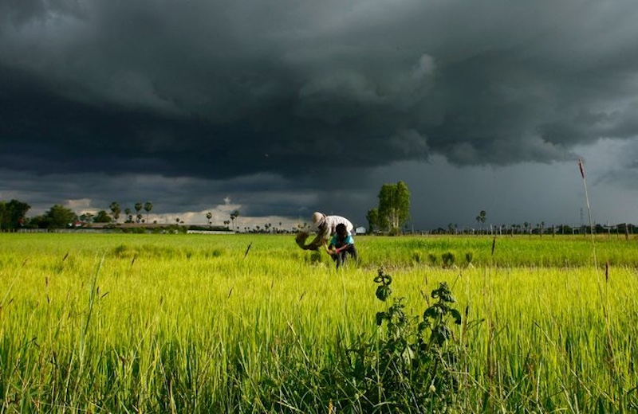

Battdambang Province
Battambang is a peaceful and culturally rich province in northwestern Cambodia, known for its scenic countryside, French colonial architecture, and growing art scene. Visitors can enjoy unique experiences like riding the bamboo train or exploring ancient hilltop temples. Fun fact: Battambang is known as the “rice bowl” of Cambodia. It produces some of the finest, award-winning rice in the world!
Bat swarm at sunset, Photo by Jean De Spiegeleer
Ta Dumbong Kro Aung Statue, Photo by Der Leng Battambang
Buddha Face at Phnom Sampeau, Photo by Demo Cambodia
Cambodia Rice Field in Battambang, Photo by Domrey Sor